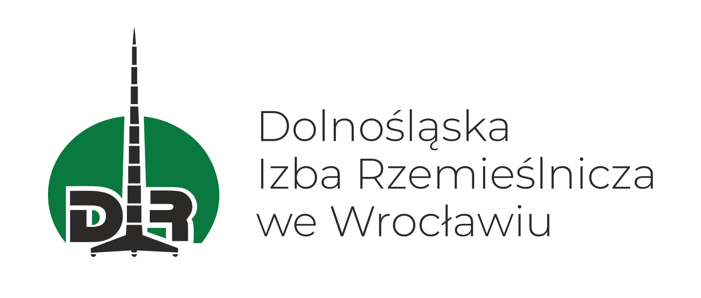

Centrum Doskonałości Kształcenia Zawodowego (CoVE) w Polsce — regionalne partnerstwo łączące edukację, naukę i biznes w celu wzmacniania innowacji w miejscu pracy w małych i średnich przedsiębiorstwach Dolnego Śląska.
Odwiedź stronę COVE PolskaO inicjatywie
Centrum Doskonałości Kształcenia Zawodowego (CoVE — Centre of Vocational Excellence) to europejska inicjatywa tworząca regionalne ekosystemy doskonałości w kształceniu i szkoleniu zawodowym (VET). CoVE łączą instytucje edukacyjne, uczelnie wyższe i partnerów biznesowych w celu dopasowania kompetencji zawodowych do aktualnych i przyszłych potrzeb rynku pracy.
COVE Polska działa w ramach europejskiego projektu WIN4SMEs i skupia się na Dolnym Śląsku — regionie o silnych tradycjach przemysłowych i rzemieślniczych. Misją konsorcjum jest transfer najlepszych europejskich praktyk innowacji w miejscu pracy do lokalnych małych i średnich przedsiębiorstw, wzmacniając ich konkurencyjność i zdolność adaptacji.
Projekt zakłada bezpośrednią współpracę z ponad 60 MŚP w regionie, oferując warsztaty, materiały szkoleniowe i wsparcie doradcze oparte na 13 najlepszych praktykach wybranych spośród 78 zgłoszonych przez 20 partnerów z całej Europy.
Podnoszenie jakości kształcenia zawodowego przez integrację najlepszych europejskich praktyk z programami nauczania.
Bezpośredni transfer sprawdzonych innowacji do małych i średnich przedsiębiorstw Dolnego Śląska.
Budowanie trwałego ekosystemu współpracy między edukacją zawodową, szkolnictwem wyższym i biznesem.
Uczestnictwo w sieci 20 partnerów z 9 krajów UE — dostęp do wiedzy i praktyk z całej Europy.
Konsorcjum
Trzy instytucje tworzące dolnośląskie Centrum Doskonałości Kształcenia Zawodowego.

Wiodąca uczelnia techniczna Dolnego Śląska i jedna z największych politechnik w Polsce. Wnosi do konsorcjum potencjał badawczy, ekspercką wiedzę z zakresu innowacji organizacyjnych oraz bezpośredni kontakt ze środowiskiem akademickim i przemysłowym. W projekcie odpowiada za analizę najlepszych praktyk oraz wsparcie merytoryczne transferu wiedzy do MŚP.
pwr.edu.pl
Publiczna szkoła ponadpodstawowa z wieloletnią tradycją, kształcąca uczniów w zawodach technicznych i branżowych. Placówka prowadzi naukę w technikum oraz szkołach branżowych I i II stopnia, oferując przygotowanie m.in. w zawodach: fryzjer, kucharz, cukiernik, sprzedawca oraz zawodach usługowych i technicznych. Funkcjonując pod hasłem „Szkoła Mistrzów", szkoła koncentruje się na praktycznym kształceniu, ściśle współpracuje z pracodawcami i realizuje elementy systemu dualnego — uczniowie zdobywają doświadczenie zawodowe już w trakcie nauki.
zsz5.edupage.org
Organizacja samorządu gospodarczego reprezentująca rzemiosło i małą przedsiębiorczość na Dolnym Śląsku. Izba jest pomostem między światem edukacji a potrzebami realnych firm — zapewnia dostęp do sieci MŚP, rozumie ich codzienne wyzwania i posiada wieloletnie doświadczenie w organizacji kształcenia dualnego i praktycznego.
izba.wroc.pl